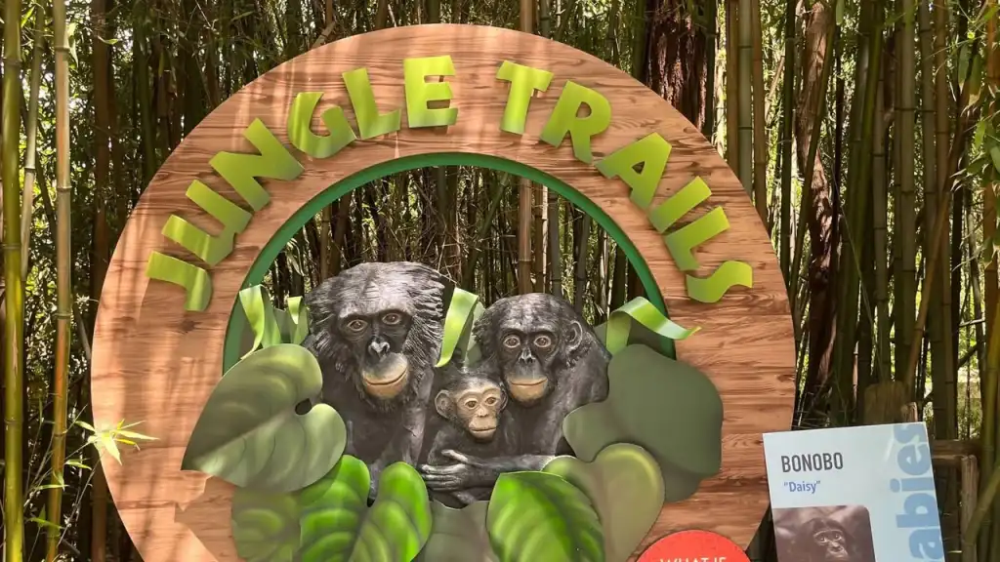

Jungle Trails
Cincinnati Zoo & Botanical Garden · Photo Tour #24

A two-and-a-half-acre primate rainforest that opened 10 July 1993. Walking it, you feel like you've left Ohio entirely — gibbons calling overhead, macaws in the trees, and one of the best bonobo habitats I've seen.
Keep an eye out for Kip, the northern white-cheeked gibbon, raised by buff-cheeked gibbon sisters M&M and Skittles after arriving from Dallas. The trail ends at a nocturnal house with an aye-aye and Henkel's leaf-tailed geckos.
The full walk is on Facebook — walk it there →